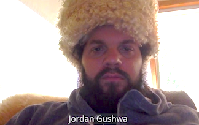

Good luck with the robots! Was awesome to have the chance to work with you.—Hannah
The Nose in his natural state seeking the best snacks. Travel safe. Keep laughing. I stole your stapler. —kfann
Your gastronomical expertise will be missed!—Kevin Z.
Was just getting to know you! Wishing you the very best on your exciting adventures ahead :)—Amanda

The best presentations teach you something new and are unforgettable. Thank you for that awesome team memory and may your guacamole live on!—Steph
Goodbye Jordan! Super bummed we won’t get to work together but excited for your new robot journey.—Temi
One day, we’ll be able to use this ad. This whole process—kicked off by an epically productive productivity break—was some of the most fun I’ve had here. Thanks for keeping the creative quirk strong. Congrats on the new gig, and hit me up when you’re settled in the Bay Area!—Melissa
Who knew grilled lettuce could taste good?! Thanks for teaching me about design and food and for all the yummy eats. Will miss you, Sarah, RB and Walter but wishing you all the best on your new bougey Cali adventure :)—Rebecca
No more RB + Gush meetings!!! Noooooooo! Super sad you’re leaving but also excited for you and Sarah! I’ll miss you guys so much!!!—Natalie
Jordan! Make those robots neon and glitchy! All our random bus rides were the best. Hopefully your next one leads to a later last call.—Matthew
Gonna miss you and your cats and talking big ideas with you. Have fun with robots! Just don’t let them build any that terminate us all.—Jen
We will miss you! Thanks for all you taught us. Stay in touch, and be the Che.—Brett
Thank you for reintroducing me to the word rad. Haven’t used it so much since I was 12. It’s great. Also, I learned a lot making guacamole with you over the last few years. Keep it weird, my friend.—Paul
Looking forward to crossing paths in the future for more mischief and mayhem. Have fun with the robots! Xo—Erika D.

I was trying to find the video of your cat trying to eat a taco tied to a balloon that we used for Firefox but couldn’t. This’ll have to do. Gonna miss you and all the weird things we convinced everyone we needed to make 💙—Liz
You will be dearly missed! My conversation with you at All Hands in Hawaii (3 weeks before I started this job) convinced me that all would be OK. Your creativity, good humor, and enthusiasm are inspiring!—Ashley